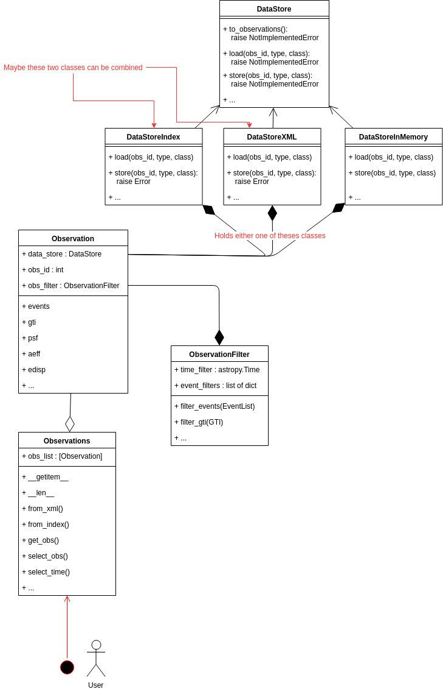

PIG 6 - CTA observation handling#
Author: David Fidalgo, Christoph Deil, Régis Terrier et al
Created: Oct 10, 2018
Withdrawn: Oct 31, 2019
Status: withdrawn
Discussion: GH 1877
Abstract#
In this PIG we want to outline an improvement of the CTA observation handling in Gammapy. The current handling has some limitations and misses some key features, like selecting a given time interval and performing an analysis on it. We also want to start using GTI to compute the observation time, instead of relying on header information. Since specifics of the final data format of CTA are still unclear, this PIG does not aim for a final implementation of CTA observation handling, nor the handling of all types of data from various instruments foreseen for Gammapy in the future. Instead it focuses on trying to resolve current limitations when analyzing IACT data, namely an analysis of time or phase selected observations, as well as an analysis of an observation stored solely in memory or given in ctool’s XML format. This PIG emerged at the Coding Spring in Madrid 2018.
Some terminology#
This terminology and the definition of the terms will probably change or be expanded once the final data format of CTA is decided. For now we will use following definitions to go forward in Gammapy:
- GTI (good time interval):
time intervals for which the instrument was on
the sum over these time intervals equals the on time
a GTI table will be required for each observation
- Observation:
has a unique identifier, the obs_id
contains 1 event list, 1 GTI table and 1 corresponding set of IRFs (aeff, edisp, psf)
a GTI table is more convenient than a
STARTandSTOPtime, it is more flexible and allows to cut out time intervals in betweenhas 1 dead-time fraction (
DEADC), the live time of the observation is obtained asONTIME * (1 - DEADC)however, in the future
DEADCis probably going to be absorbed into the IRFS, then we should switch from live time to on time when calculating the exposure
- Observation library:
the repository where the observations and IRFs are stored
it has a manifest connecting all observation files and their IRFs
Status#
In the current implementation we use the DataStore class to connect to an
observation library that consists of two fits files, the observation index
table and the HDU index table (see gadf). The DataStoreObservation is
a proxy object to the DataStore and points to a single observation in the
observation library. The DataStoreObservation never holds on to the
observation data in memory and only reads it when explicitly accessed
(.events, .gti, .aeff, etc.). However, it does some caching of meta
data. Recently a new observation class ObservationCTA was added that is
capable of storing all observation data in memory. However, with the new scheme
proposed further down, this class becomes superfluous and can again be removed.
Normally the user starts an analysis with the creation of a DataStore object
from which she/he extracts an ObservationList providing obs_ids. All
analysis classes take as input an ObservationList, which is basically a
python list of DataStoreObservation.
Limitations#
We can only analyze data for which its observation library has the index table format.
The current scheme does not allow for an analysis of a given time interval by the user. Only full runs/observations can be processed.
We do not support event selections before starting the analysis steps, such as event type selection, phase selection or time selection.
It is cumbersome to write a copy of an observation (possibly modified) back to disk
Objectives#
Users should be able to run an analysis (1D and 3D) on a given time interval, independent of the time intervals of the single observations.
We should support event selections before starting the analysis steps (event phase, event type, …) and possibly allow for custom selections, e.g.
MC_IDin the current CTA 1DC. For now we aim only for a time and phase filtering of events, a filtering on event type, for example, is more complex and is left for a future PIG.We want to support more formats for the observation library (like ctools XML format)
We want to support observations (especially event lists) stored in memory
Use cases / scenarios#
- Scenario: 1D/3D analysis for a user specified time interval
- Given a user specified time intervalWhen performing a 1D/3D analysis of the corresponding observationsThen get results only for the specified time interval
- Scenario: 1D/3D analysis for a user specified pulsar phase interval
- Given a user specified pulsar phase intervalWhen performing a 1D/3D analysis of the corresponding observationsThen get results only for the specified phase interval
Make GPS survey maps for CTA (process 10 GB of events data and 3000 runs, testing the memory usage)
Create an observation from scratch and write it to disk with Index files
Read in an observation from an observation library given in ctool’s XML format
What others have#
With Fermi-LAT, you always have gtselect and gtmktime at the start
(see Fermi-LAT data preparation). Following analysis steps partly rely on
“data sub space” DSS header keys for processing, which are stored in the output
fits files of the gtselect and gtmktime step.
In ctools, every analysis starts with an “observation definition file” in XML
format. One can then select observations with csobsselect, creating a new
observation definition file. A selection based on events is achieved by running
ctselect.
Proposal#
General idea and class diagram#
The general idea is to have an Observations class that is the starting point
of all analyses and is passed on to the analysis classes of the 1D and 3D
analysis (effectively it replaces the ObservationList class). The user should
only have to interact with this class, which makes it an interface to the
other classes described in the following (Observation and DataStore), and
therefore mainly consists of convenient functions. The Observations class
holds a list of Observation objects.
The Observation class is essentially a proxy class to the data store
classes. In addition an Observation object will also hold an
ObservationFilter object, which is used to orchestrate the filtering of
the data, mainly the event list. The filtering is applied on-the-fly when
accessing the observation data. In this way we avoid storing the modified
observation data in memory, which is important for the last use case specified
above.
The different data store classes are (this still needs to be discussed in more detail):
DataStoreIndex: This is basically just a renaming of the currentDataStoreDataStoreXML: This class is able to read XML files as used for ctools (maybe this class can be combined with theDataStoreIndex)DataStoreInMemory: This data store class is special in the sense that it does not point to files on disk, but holds the information data in memory. This can be useful when creating observations from scratch, by simulating the event list for example.
All data store classes inherit from a parent DataStore class that names the necessary methods, which have to be implemented by the Child classes.
The new scheme proposed is illustrated by the class diagram below. The attributes and methods of the classes are not fully worked out and are merely suggestive.
Implementation road map#
We will outline the road map in form of scenarios that we want to achieve along the way and that can be implemented ideally with a few PRs.
We split the implementation in two big steps:
first we want to focus on implementing the
Observations,ObservationandObservationFilterclassesthe second step is the work on the
DataStoreclasses
Scenarios:
- Scenario: Run a 1D/3D analysis with the
Observationsclass - Given a basic version of the
ObservationsclassWhen passed on to the analysis classesThen should behave the same as the currentObservationListclassPRs: ObservationList -> Observations, initialize with a list ofDataStoreObservation; implement__len__,__getitem__; adapt notebooks
- Scenario: Run a 1D/3D analysis with the
- Scenario: Add an empty filter to an
Observation - Given a basic version of the
ObservationandObservationFilterclassWhen accessing.events,.gtiof theObservationThen automatically apply the empty filter on the flyPRs:DataStoreObservation->Observation; createObservationFilterclass; add anObservationFilterto eachObservation; develop basic API
- Scenario: Add an empty filter to an
- Scenario: filter an
Observationby time - Given a user specified time intervalWhen we give the time interval to an
ObservationThen return a newObservationwith the according time filterPRs: Introduce time filters for events and gtis; Addselect_timemethod to the Observation class
- Scenario: filter an
- Scenario: filter an
Observationby pulsar phase - Given a user specified phase intervalWhen we give the phase interval to an
ObservationThen return a newObservationwith the according phase filterPRs: Addselect_phasemethod to the Observation class
- Scenario: filter an
- Scenario: filter
Observationsby time - Given a user specified time intervalWhen we give the time interval to the
ObservationsThen return a newObservationsholding the selectedObservationobjects with the respective time filterPRs: Addselect_timemethod to theObservationsclass;
- Scenario: filter
Proposed class diagram#
Decision#
This PIG was written in fall 2018. It was intended as a design document and work plan, but didn’t reach a state where it was complete and ready for review. Then the original author left astronomy, and the other developers continued throughout 2019 without using the PIG. We now feel that withdrawing the PIG is the best course of action, making room for new pull requests and PIGs in the future to improve CTA observation handling in Gammapy. It’s not a “solved problem”, instead it will be an intense focus of work in Gammmapy and CTA in the coming years.